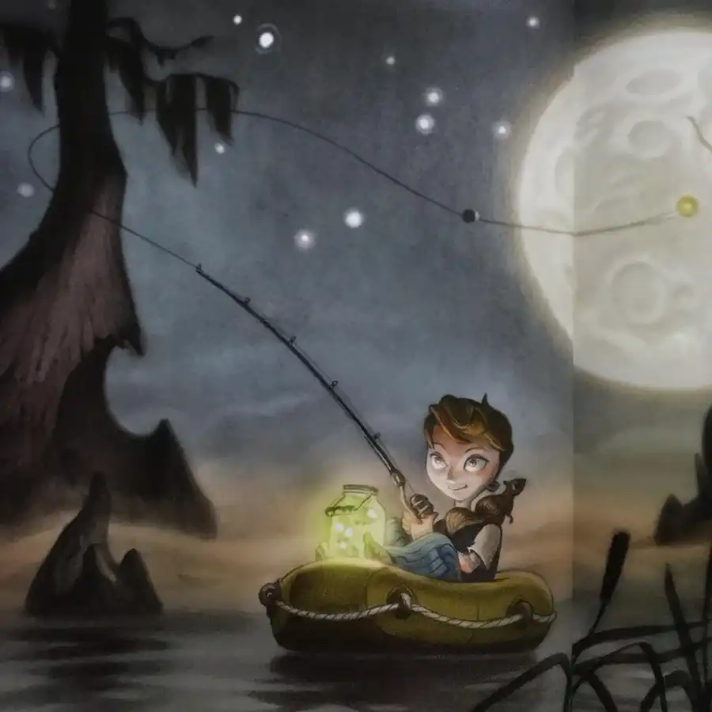
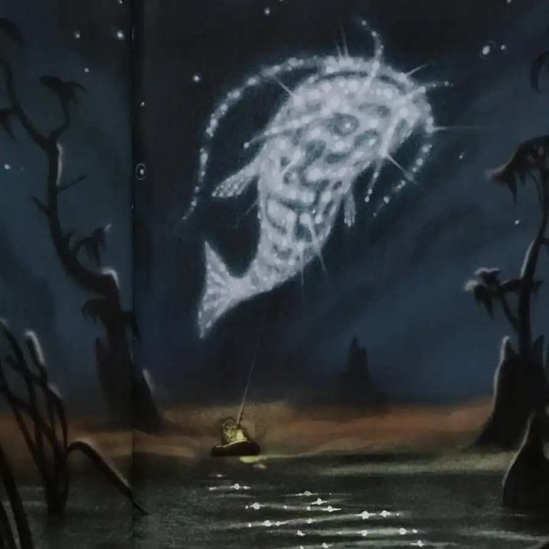
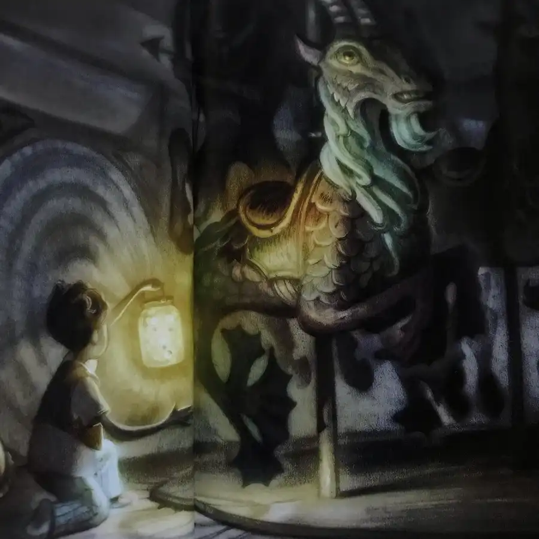
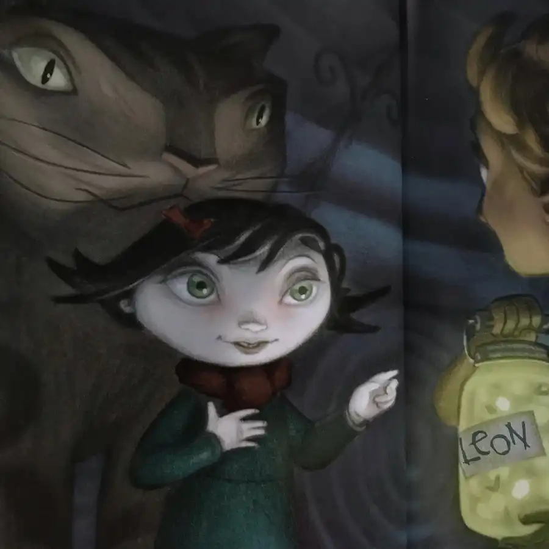
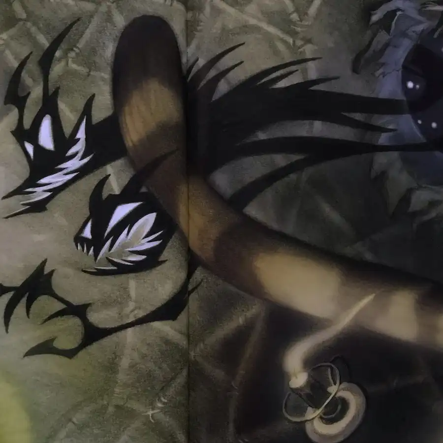
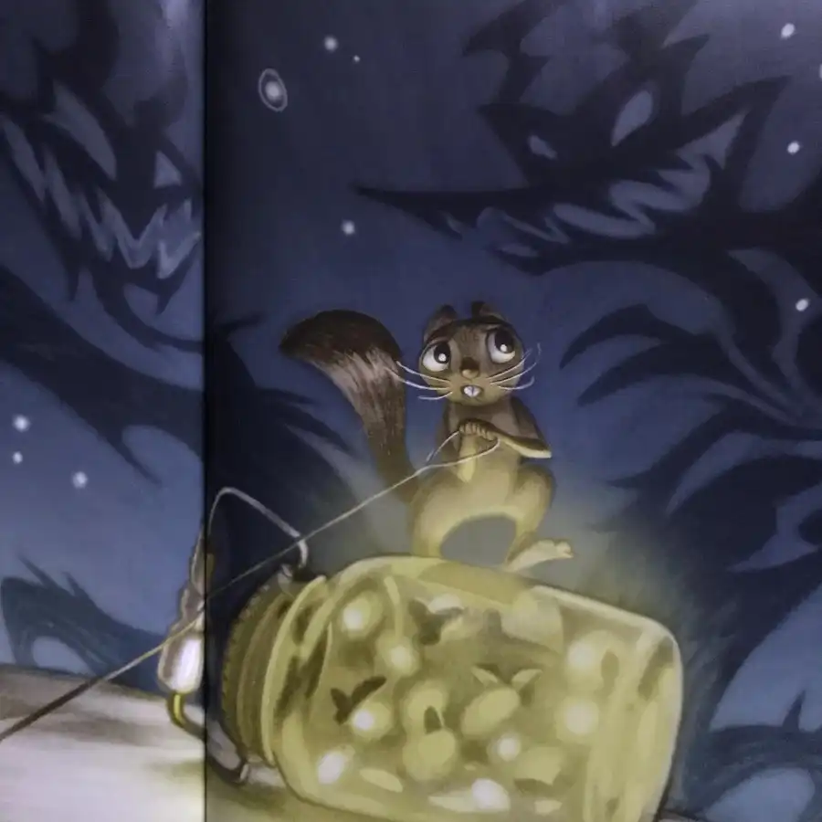
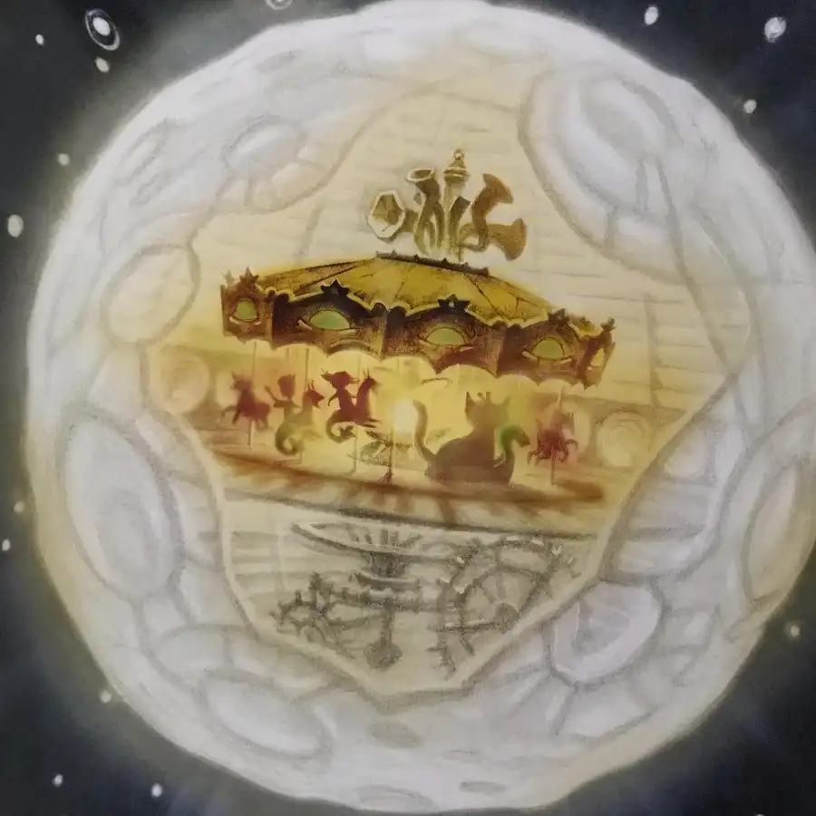

Here’s a peek at Moongirl, written by director Henry Selick (adapted from his own animated short) with art drawn by Peter Chan and digitally colored by Courtney Booker. Leon, while out fishing with his pet squirrel Earl, is whisked into the sky by an enormous starry fish and transported to the moon. To his surprise, he discovers the satellite is hollow; inside he finds a marvelous carousel tended by a lunar denizen named Moongirl and her giant cat Siegfried. When the gargaloon, a monster from the dark side of the moon, slips in and steals Leon’s jar of lightning bugs, the children and animals must retrieve the glowing insects in order to light the carousel and preserve the magic of the moon. The mysterious caper draws to a close, and Moongirl returns to earth, leaving Leon (newly dubbed “Moonboy”) to take his turn as keeper of the carousel. The whimsical adventure, bolstered by Selick’s straightforward language and Chan and Booker’s soft-textured illustrations, leaves a lasting impression of fantasy and cheer. #moon #girl #fish #fishing #light #dark #carousel #adventure #magic #book #books #childrensbooks #picturebook #picturebooks #picturebookillustration #picturebookart #childrensbookillustration #childrensliterature #illustration #kidlit #kidsbooks #bookworm #booklover #booklovers #bibliophile #bookstagram #bookstagrammer #bookstagrammers #instabook #instabooks







